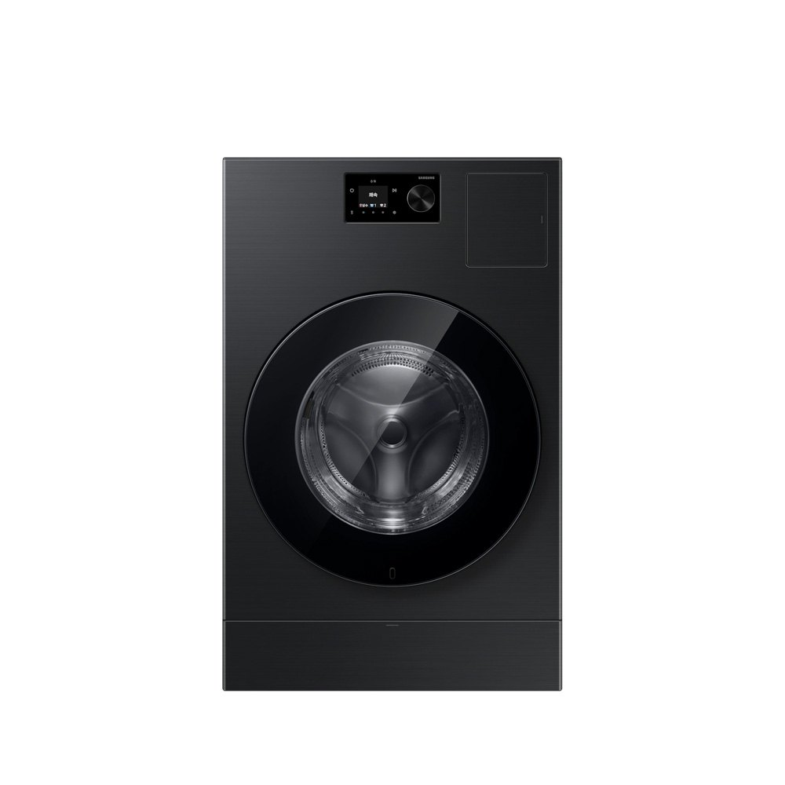
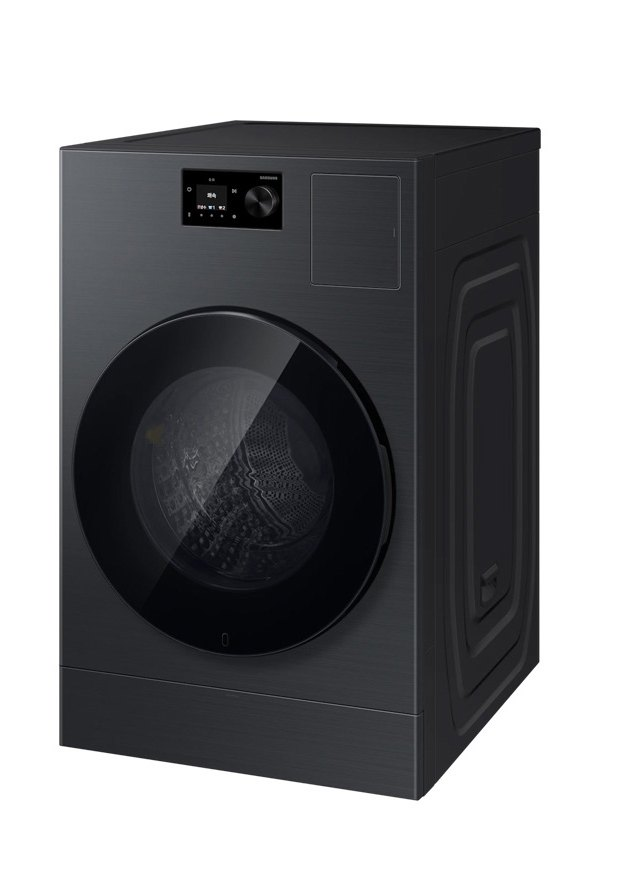
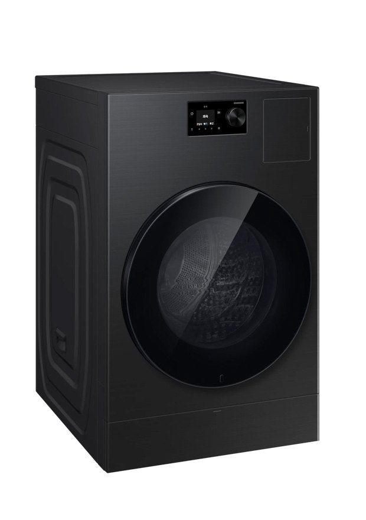
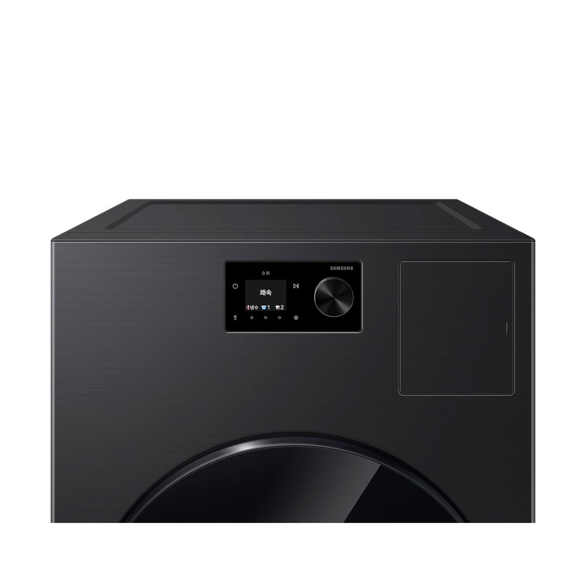

Samsung Bespoke AI Combo WD80H25BHB Review: Overview
This Samsung Bespoke AI Combo review covers the WD80H25BHB, a 2026 all-in-one washer dryer combo sold in Korea. A single drum washes up to 25 kg and dries up to 18 kg, so you can load dirty laundry in the morning and take out dry clothes without moving them to a second machine.
It is the entry version of Samsung's 2026 AI Combo line, with a 2.8-inch colour LCD and jog dial, a Black Caviar finish and an energy-efficiency grade 1 rating. Its launch price was 3,299,000 KRW, and the Samsung partner store listing we checked on Naver advertised a maximum benefit price of about 2.55 million KRW with coupons and card discounts. We checked the specs against Samsung Korea's product page, Samsung's March 2026 press release and Korean retail spec sheets.
"One machine, one footprint: wash 25 kg and dry 18 kg without ever moving a wet load."

Design: One Tall Unit Instead of a Stack
A stacked washer and dryer is usually about 1.8–1.9 m tall, while the Bespoke AI Combo stands 1,110 mm high. The controls sit at chest height and the top is free for a basket. The Black Caviar finish is a dark, slightly textured grey-black that hides fingerprints better than glossy white, and the tempered-glass door has a drum light so you can see inside.
The trade-off is depth and weight: at 875 mm deep and 144 kg, it needs a solid, level floor and enough room in front for the door to open fully. Korean apartments usually place it on the utility balcony or in a laundry room, where one machine frees up the space a second unit would take.


Washing and Drying Performance
- Heat-pump dryer: Korean retail specs list an inverter heat pump, which dries at lower temperatures than older condenser dryers and is gentler on fabrics.
- Wash to dry in one go: choose a combined course and the machine moves straight from washing to drying; a quick course of about 89 minutes is listed for this model.
- AI wash and dry: the machine senses the load and suggests course settings, and AI Energy mode trims energy use with the SmartThings app.
- Detergent auto-dosing: fill the tanks once and the machine measures detergent for each load, with a detergent-scan function.
- Hygiene: steam sterilisation, a pet-care course, automatic heat-exchanger cleaning and a front-access lint filter.
Controls, App and Maintenance
The 2.8-inch colour LCD with a jog dial is the main difference from pricier 2026 AI Combo versions with large touch screens. Turning a dial is simple for anyone in the family, and the screen still shows course names, time remaining and settings clearly.
Built-in Wi-Fi connects to the SmartThings app for remote start, notifications and energy tracking. For upkeep there is a detergent-free drum-clean course and hot-air interior care, and the Samsung partner store listing advertises a 10-year free repair warranty on the digital inverter motor and compressor.

Key Specs
| Spec | Samsung Bespoke AI Combo WD80H25BHB |
|---|---|
| Type | All-in-one washer dryer (front-load, one drum) |
| Capacity | Wash 25 kg / dry 18 kg |
| Dryer type | Inverter heat pump |
| Quick course | About 89 minutes (wash + dry, Korean retail spec) |
| Display | 2.8-inch (71.1 mm) colour LCD + jog dial |
| Size (W × H × D) | 686 × 1,110 × 875 mm |
| Weight | 144 kg |
| Power | 220 V / 60 Hz; heated wash 2,100 W, drying 1,000 W |
| Energy rating | Korean efficiency grade 1 |
| Smart | Built-in Wi-Fi, SmartThings app |
| Key features | Auto detergent dosing, steam sterilisation, AI vibration and noise reduction, drum light, front filter |
| Colour | Black Caviar |
| Made in | Korea; launched March 2026 |
| Korean price | Launch 3,299,000 KRW; about 2.55 million KRW max benefit price on the Naver partner listing at time of writing |
Specifications come from Samsung Korea's WD80H25BHB product page and specification list, Samsung Newsroom Korea's 2026 Bespoke AI Combo launch release (March 26, 2026) and Korean retail spec sheets (Danawa, 11st). Cycle times and energy figures are manufacturer data; we did not lab-test them.
How It Compares
| WD80H25BHB (25/18 kg) | 2026 AI Combo top version (25/20 kg) | Separate washer + dryer stack | |
|---|---|---|---|
| Footprint | One unit, 1,110 mm tall | One unit | Two units, about 1.8–1.9 m stacked |
| Drying capacity | 18 kg | 20 kg (booster heat exchanger) | Depends on dryer, often 20 kg+ |
| Quick wash + dry | About 89 min | 69 min (Samsung figure) | Must move the load by hand |
| Controls | 2.8-inch LCD + dial | Large touch screen | Separate panels |
| Price in Korea | From 3,299,000 KRW launch | Up to 4,299,000 KRW launch | Varies widely |
| Best for | Space-saving value pick | Big families, fastest cycles | Washing and drying at the same time |
Pros & Cons
| Pros | Cons |
|---|---|
| Wash and dry 25/18 kg in one footprint | Heavy (144 kg) and deep (875 mm) |
| No moving wet laundry between machines | You cannot wash one load while drying another |
| Heat-pump drying, gentle on clothes | Slower quick course than the top 2026 version |
| Simple dial controls and auto detergent dosing | Korean 220 V model; not sold for U.S. power |
Who It Suits (and Who Should Skip It)
- Yes: Apartments with room for only one laundry machine.
- Yes: Couples and small families who wash a load or two a day and want it dry by evening.
- Yes: Anyone who prefers a physical dial to a large touch screen.
- No: Large households that need to wash and dry separate loads at the same time.
- No: Buyers outside Korea; look for the local Bespoke AI Laundry Combo model built for your voltage instead.
Samsung Bespoke AI Combo FAQ
What is the Samsung Bespoke AI Combo WD80H25BHB?
It is a 2026 Korean-market all-in-one washer-dryer from Samsung. One drum washes up to 25 kg and dries up to 18 kg, and it can run a wash straight into a heat-pump dry without you moving the laundry. This version has a 2.8-inch (71.1 mm) colour LCD with a jog dial and comes in Black Caviar.
How big and heavy is it?
Samsung lists it at 686 mm wide, 1,110 mm tall and 875 mm deep (about 27 × 43.7 × 34.4 in), weighing 144 kg. It replaces a stacked washer and dryer in a single footprint, but measure the door, hallway and laundry-room width before delivery.
How fast is a full wash and dry?
Korean retail specs list an 89-minute quick course for this model. Samsung's 2026 press release quotes 69 minutes for the quick course on the top 25/20 kg version, so the base 25/18 kg model is slower. Normal mixed loads take longer than the quick course.
Does it dose detergent automatically?
Yes. It has automatic detergent dosing with a detergent-scan feature that measures the amount, plus AI wash-and-dry course setting, steam sterilisation and remote control through the SmartThings app over built-in Wi-Fi.
Can I buy the Korean WD80H25BHB in the U.S.?
Not easily. It is built for Korea's 220 V / 60 Hz power and sold through Korean retailers. In the U.S., Samsung sells its Bespoke AI Laundry Combo under different model numbers, so the Amazon button on this page searches for those U.S. versions instead.
Samsung Bespoke AI Laundry Combo Washer Dryers
The Korean WD80H25BHB is sold through Korean retailers. In the U.S., Samsung sells the Bespoke AI Laundry Combo under different model numbers; compare current listings on Amazon.